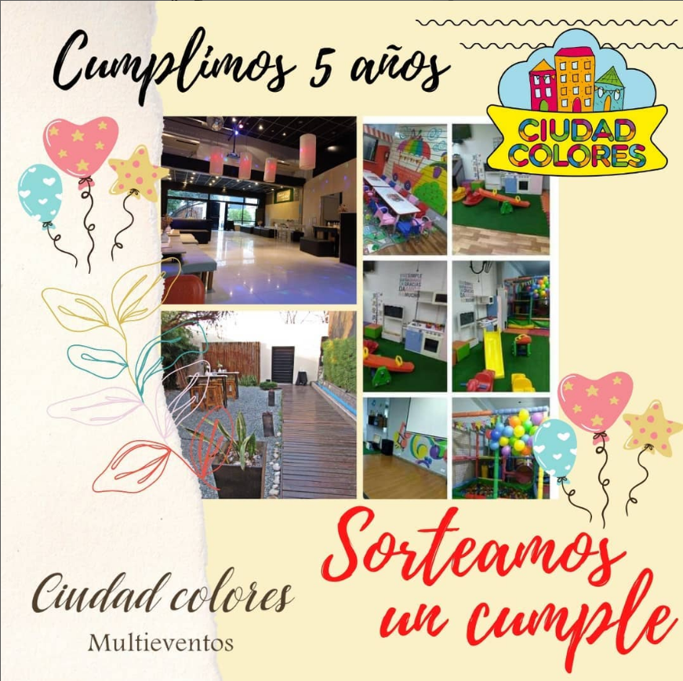
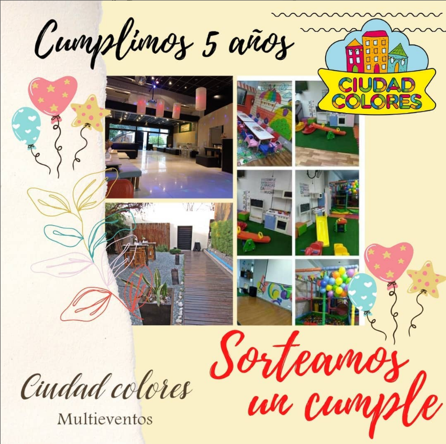

Nuestro Inicios
Hace aproximadamente 6 años surgio Ciudad Colores. Nuesta idea original era enforcarnos en hacer un salón de fiestas para realizar eventos infantiles, es asi como un 13 de octubre del 2016, se inaguro Ciudad Colores.
Ubicado originalmente en Av Avellaneda 3827 localidad de Virreyes, Provincia de Buenos Aires. Empezamos tomando reservas de Martes a Viernes, pero debido a la gran cantidad de reservas llegamos ampliar los días de Lunes a Lunes con una franja horaria de 10hs a 20hs.
Cuando todo marchaba bien y teniendo buena cantidad de reservas, nos toco la pandemia, tuvimos que cerrar unos meses (casi un año) debido a medidas sanitarias. En este momento se nos vencia el contrato con el antiguo salón y tuvimos que cerrar.
 

Viendo la situación, nos arriesgamos alquilar otro local en el que actualmente nos encontramos, sin saber cuanto tiempo podia durar las medidas sanitarias. Es así como a medidados de Junio del 2021 abrimos nuestro nuevo salón de fiestas.
Esta vez, con un salón mucho más grande decidimos ampliar que tipos de eventos realizar, ahora mismo contamos con eventos infantiles, casamientos, festejos, cumpleaños, aniversarios, etc.
Con Ciudad Colores, saben que pueden confiar completamente con nuestro servicio y disfrutar del momento con plena tranquilidad debido a la calidad que ofrecemos-